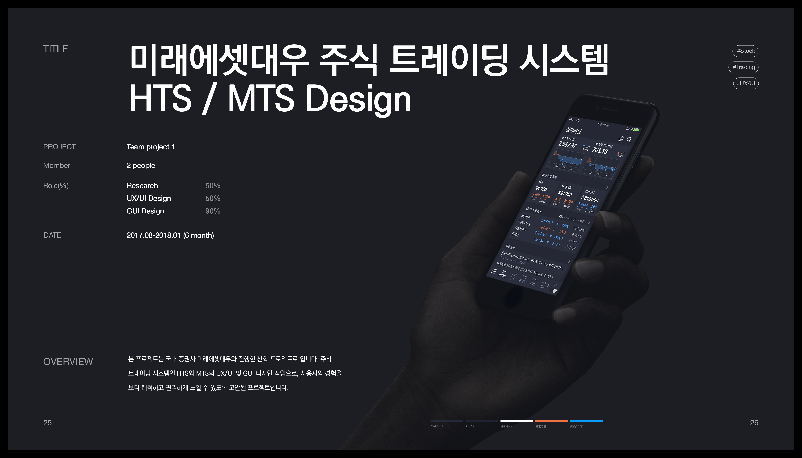
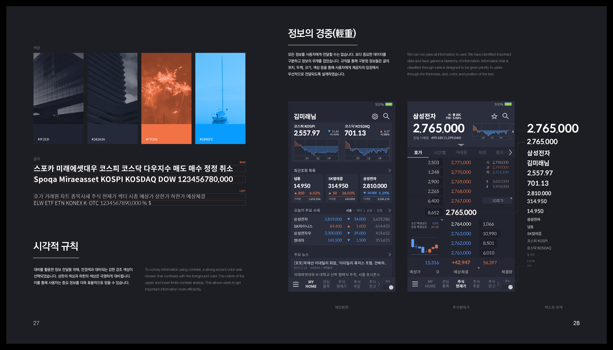
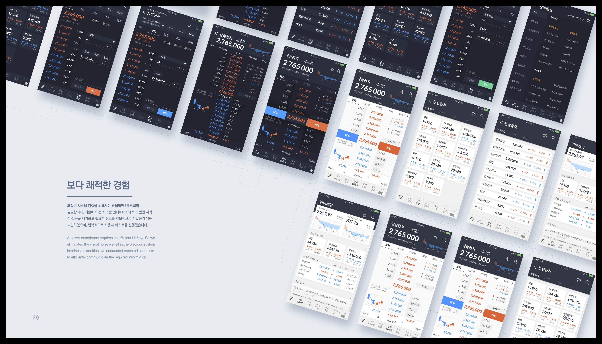
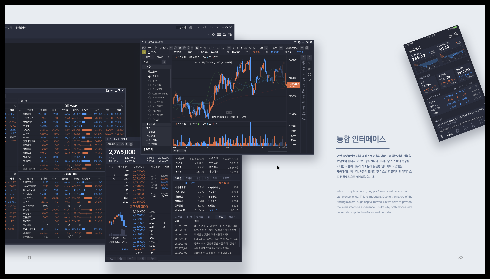

- HYUNDAI SMART KEY: Mobile UX/UI Design
- 나음(NAUM): Caregiver Matching Service)
- 함께 타이포그래피-모바일 본문 타이포그래피 연구
- 미래에셋대우 주식 트레이딩 시스템
미래에셋대우




Date: 2017.08- 2018.01
Member: 2 people
Role: Research / UX/UI Design / GUI Design
Summary: 본 프로젝트는 국내 증권사인 미래에셋대우와 진행한 산학프로젝트입니다.
주식 트레이딩 시스템인 HTS와 MTS의 UX/UI 및 GUI 디자인 가이드를 진행했습니다.
사용자의 경험을 보다 쾌적하고 편리하게 느낄 수 있도록 고안된 프로젝트입니다.
- HYUNDAI SMART KEY: Mobile UX/UI Design
- 나음(NAUM): Caregiver Matching Service)
- 함께 타이포그래피-모바일 본문 타이포그래피 연구
- 미래에셋대우 주식 트레이딩 시스템